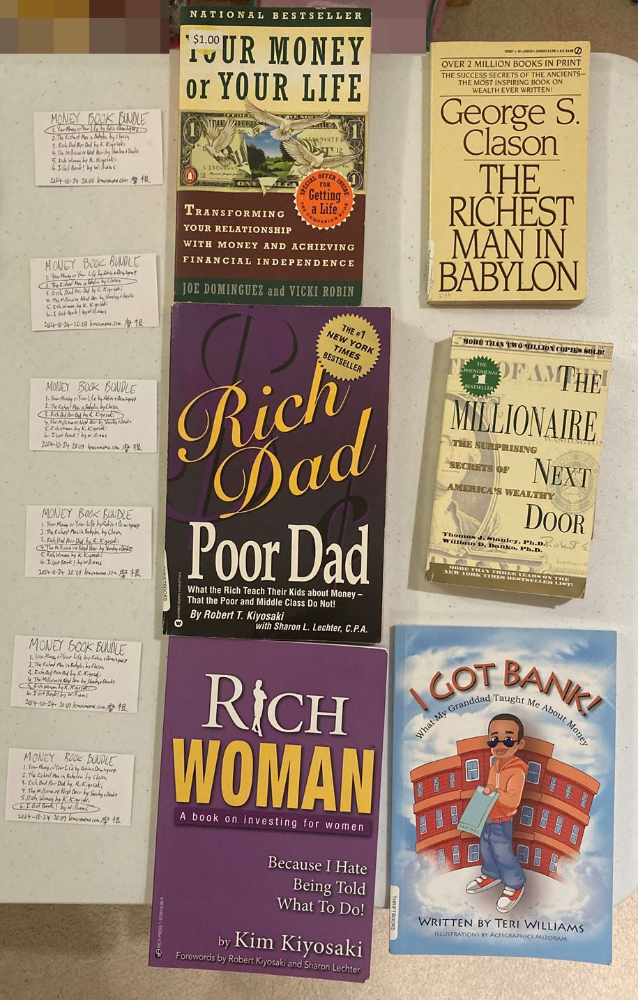

檸檬媽媽lemonmama.com2025 February Blog Posts - 2025年二月部落格文章
#0082 - Once Again Joanna Wang Describes My Life #0081 - Javascript Peer to Peer App Works to Send Message Between Browsers Including Across Networks and Across Devices --------------- #0096 推銷 Promoted: YOUR SPONSOR LINK HERE 2025-02-20 2050 on lemonmama.com#0096
Title of poem: unless you live on the equator or the poles then you get to see all this!! cool huh Poet: Alexander Hamilton spring summer winter fall our earth; our world goes through it all from blossoms and bees to nests in trees our earth goes through it all temperatures climb as mosquitoes whine our world goes through it all crickets call and the leaves fall our earth goes through it all frozen air and bushes bare our world goes through it all spring summer winter fall our earth; our world goes through it all --------------- #0095 推銷 Promoted: YOUR SPONSOR LINK HERE 2025-02-20 1145 by author Morgan Jassen on lemonmama.com#0095 - Money Book Bundles
As a business idea, I made some money book bundles to sell, as described below. However in the end, at this point, I have given up for now. The idea is to buy the books separately, bundle them, and then sell them for a profit. The idea is that curating them and bundling them is adding value so people would buy them even though the bundle is more expensive than the separate books. Here are two pictures, first of the separate 6x books laid out, then of the bundle wrapped up: First picture here:  Second picture here: Here are the titles of the books in the bundle: ~ Lemonmama.com promoted product is a book bundle! MONEY BOOK BUNDLE used books 6x classic authors This is a bundle of 6 books including these: ~ 1.) Your Money or Your Life by Robin and Dominguez 2.) The Richest Man in Babylon by George Clason 3.) Rich Dad Poor Dad by R. Kiyosaki 4.) The Millionaire Next Door by Stanley and Danko 5.) Rich Woman by K. Kiyosaki 6.) I Got Bank! By Williams ~ Check our ebay page for availability and to buy a book bundle: https://www.ebay.com/usr/morjas-0 ~ However in the end I didn't sell any book bundles. And I did get discouraged and did pretty much give up by this point. In conclusion, it seemed like a good business idea to sell book bundles, however in the end at this point I didn't succeed and I did give up. --------------- #0094 推銷 Promoted: YOUR SPONSOR LINK HERE 2025-02-20 1145 by author Kissyface Stowaway on lemonmama.com#0094 - Two Ways How To Give Oneself Permission To Do A New Hobby
Scenario: I want to join a new hobby club. However there is this constant pressure, from my home team (my closest colleagues, friends, and family) to expect me do what they want to do every day all day, like to work overtime, meet at the bar every night, eat ice cream and play video games every night. Of course I want to do all this, I want to hang out with my home team crew too. However I want to do my own interests and make new friends too. How to rationalize this then? Two reasons why it is fine to give oneself permission to do my own hobbies weekly, are the following: 1.) I invite my existing peeps to come with. Just becuse I'm doing the hobby / club / activity that I want, doesn't mean I won't invite my crew to come too. That way I'm doing my chosen hobby but my home team crew is also welcome to come along too. 2.) Sometimes I do skip my hobby activity and do what my home team wants instead. Like A couple times per quarter, I'll skip my new sports club and go meet my old home team crew at the bar that night instead. Or every so often I'll skip my new social book club and go eat ice cream and play video games that night instead. In conclusion, the pro tip here, the life hack here, is to 1.) do a new hobby but invite your old crew to do it with you, and 2.) even though you're doing a new hobby do skip it once in a while to hang out with your old home team as well. And by using these two strategies, one can give oneself permission to do a new social hobby! --------------- #0093 推銷 Promoted: YOUR SPONSOR LINK HERE 2025-02-18 2215 by author Ball Punyin on lemonmama.com#0093 - A Friend of Mine， Musty Mustard [A Friend of Mine]
A friend of mine, Musty Mustard. Musty Mustard stretches every morning, then goes to karate class. Musty's friends are there. Musty Mustard keeps going to work every day. Musty Mustard breathes easy while working hard. Musty's friends are there too. Musty Mustard uses 10% of Musty's paycheck to buy stocks. That's like one share per month. In the evening, Musty Mustard spends time with Musty's family. In conclusion, Musty Mustard is a friend of mine. --------------- #0092 推銷 Promoted: YOUR SPONSOR LINK HERE 2025-02-13 1817 by author lemonmama on lemonmama.comAlign Finance With Social Remix
'You should align your financial life with your social life' (paraphrasing) -heard on one of my main podcasts in the last year or two in 2024 iirc Ever since i heard this it feels true to me. and so i'm iterating in my head to try and find how to do better at this. I think it means the following: You should socialize with the same people you do business with, and vice versa. It just makes so much sense. And so I'm thinking how can i aligne these mre for myself? I think i can do the following: - Join a gym where my (work colleagues) also go. - Join a gym where my (next door neighbors) also go. - Work where my (next door neighbors) do. - Work where my (gym buddies) do. said otherwise: - Live where my (gym buddies) do. - Live where my (work colleagues) do. Another example: - for (the coffee shop where i hang out), work there too. - for (the coffee shop where i hang out), go to the one where my (gym buddies) do. - for (the coffee shop where i hang out), go to the one where my (next door neighbors) also go. Another example: - For my toastmasters club, go to the club where my (gym buddies) do. - For my toastmasters club, go to the club where my (next door neigbors) also go. - For my toastmasters club, go to the club where my (work colleagues) also go. Another example: - For (work colleagues), also go to the same (gym) as them. - For (work colleagues), also live in the same (neigborhood) as them. - For (work colleagues), also go to the same (coffee shop) as them. - For (work colleagues), also go to the same (toastmasters club) as them. You get the point. DO IT. DOOOO IT. --------------- #0091 推銷 Promoted: YOUR SPONSOR LINK HERE 2025-02-13 1120 by author lemonmama on lemonmama.com#0091 - 1 To 1 To 1 Device To Identity To Phone-Number Not Good Sez I
Devices shouldn't be linked to our identity. Our identity shouldn't be linked to our device. Who are we, voldemort with a horcrux? If that's the case then it really would be better to link it to 7 different devices, not just 1. However these days in 2024-2025 folks tend to link 1:1 device to identity. Specifically each person is assumed to have one and only one iPhone (or android, not both). And assumed they have one phone number linked to that device. And assumed that they, that I, don't share that device with any other person. Sooo bad in terms of personal identity and privacy, sez I. Remember the old days (the late '90s and early 2000's) when we had logins that weren't linked to any email address nor phone number? One had to remember one's username and password in order to log in. that's all. One solution can be to just stop using these accounts. Stop using the ones that require constant 2fa and the ones that require an email-address / phone-number. Question: Ok but so what alternatives don't require a login? Answer: How about GNU Jami? In conclusion, (our devices : our identity : our phone number) shouldn't be linked like that, not in a 1:1:1 relationship, says I. There are alternatives says I. --------------- #0090 推銷 Promoted: YOUR SPONSOR LINK HERE 2025-02-13 1028 by author lemonmama on lemonmama.com#0090 - Rant About 2fa (Its Really The Only Factor)
/start rant about 2fa JUST realized. Apps services are working around password. Not to single anyone out, and I love some of these services, but: • Apple Inc • Interactive Brokers • Dayforce Hcm For three examples. It's not possible to not use 2fa tied to a phone number. It means that they don't hardly give a f**k that I take any care to remember my password nor set a secure password. They just require me to respond to the 2fa text/call to my phone every single time I try to log in. wow. Can't believe I just realized this. Every single time. They are lazy they are not trusting users to remember users' passwords properly nor to use secure unique passwords. Or else, it's not possible for me to not tie my login to a phone number. And then other services that I may also love but also require 2fa linked to a phone number: • LINE(line.me) • Signal Messenger(signal.org) *sigh* I see the logic. But its dumb. //end rant. In conclusion, they call 2fa 'two factor authentication', but really, the linked phone number is the one and only factor. --------------- #0089 推銷 Promoted: YOUR SPONSOR LINK HERE 2025-02-12 1417 by author lemonmama on lemonmama.com#0089 - Each Earthling 1.Sassy 2.Brassy 3.Muscly 4.Money
historically women sassy and brassy. historically men muscly with money. Paradigm shift sassy and brassy AND muscly with money for each earthling. So in other words men and women, all sassy and brassy and muscly with money. everyone. human earthlings. this is even better paradigm obviously. See also: #0001 - U.S.A. Culture 美國文化 In conclusion, wouldn't it be better if men are all four and women are all four? Nice. Paradigm shift. --------------- #0088 推銷 Promoted: YOUR SPONSOR LINK HERE 2025-02-11 2200 by author lemonmama on lemonmama.comRemix Muscles Money Game
Time to remix my life. A wise person once said, to focus one's life, one should navigate Muscles, Money, and Game. https://creators.spotify.com/pod/show/pbd [...] podcast/episodes/PBD-Podcast--EP-124--The-Rational-Male-Rollo-Tomassi-e1e4eot Ok so discipline. A wise person once said Discipline is remembering what you want. https://lemonmama.com/lemonmama/2024/2024-04-24-0536-quote-discipline-remembering-want.html Muscles - I can do walking, stretching, and Jiu-Jitsu. Weekly and daily. I can rest enough and bliss out enough and Money - I can use '1 Tenth Thy Gold' to buy valuable assets. I can work to earn 10/10 of my gold, and then use 1/10 to buy assets ongoing. Such as silver/gold coins, public company shares, shares in a private business, ownership of a rental-house company, etc. etc. Game - I can invite family and friends to meetings weekly and daily for coffee/tea/exercising/socializing/business. I can listen to my family and frieds and talk with them. So to recap: Musles - Excercising and resting and diet and calm-bliss-levels balanced lifestyle, daily-weekly. Money - Buy cash flowing assets weekly from working-job salary. Game - Meet, listen, and talk with family and friends weekly/daily. --------------- #0087 推銷 Promoted: YOUR SPONSOR LINK HERE 2025-02-07 1421 by author lemonmama on lemonmama.com#0087 - Powerline.io Favorite Names
Here are some of my favorite names I have used in powerline.io. In case you haven't heard, powerline.io is an online game where you are a snake and you can eat niblets to grow, and you can cross other players, and you can get close to other snakes/players to boost. https://powerline.io/ I credit myself with making up all of these names, if any were made by anyone else before then I didn't know it was a coincidence. Note since powerline.io is an anonymous online game I like to, for fun, and to be clever and for satire, to make clever names including funny and offensive ones. And one reason to enjoy making these names, is that, on iOs app, they are limited to 15 characters and limited to ASCII characters only. And so it's a challenge to entertain and/or offend other strangers, with the strict limitation of this few characters! But that is the fun, how to create short but smart / fun / offensive names?! And so please do take these as 100% fun and satire and joking, as that is all that they are meant to be. Enjoy!! first below is the CLEANER list of names. second below is the RUDER list of names. CLEANER list here: I CAN HAZ DOTS? NO DOTS FOR YOU NO DOTS 4 YOU!! go hard im OG (like "go easy im noob") you eat my butt Q-Tips Are Real (like "_____ is Real") Butt Sniffer Henniker Yo Angry Orchard PBD Killer LeftoverParfait Burr Shot First This Is The Way Scary Snek Eek! A.Ham Shot 1st Bacon Hero Timeless Hero DO it. DOO it!! Big Butt Energy Rick Assley DOTS = YUCKY You = Not Dumb You=Not NotDumb TACO RUINER Pwline,IONotBad Mo-o-ovz=Jagger DAVID S PUMKINS ProbablyNargles EmbiggeningSnek Eating Biscuits (like "come galletas") Mika Relax Regular Nipples Powerlion AiYo Timeless Hero RUDER list is here below. NOTE The following list is SATIRE. It is comedy, it is only for joking. You are guaranteed to be OFFENDED by these. Proceed at your own risk only!!! And so I have obfuscated these by converting them to ASCII code, So you won't be offended (nor entertained) by them unless you choose to actively go yourself and translate them into text. Yes I agree the following rude names are satire and I don't hold the author liable for any offense. RUDER list here: (note the first two in the list are just for testing, the rest are OFFENSIVE!) Timeless Hero "84 105 109 101 108 101 115 115 32 72 101 114 111" DO it. DOO it!! "68 79 32 105 116 46 32 68 79 79 32 105 116 33 33" ??????????????? "77 89 32 80 80 32 78 79 84 32 83 77 79 76 33" ?????????????? "85 114 32 77 111 109 32 61 32 66 105 116 99 104" ??????????????? "74 101 115 117 115 32 72 70 32 67 104 114 105 115 116" ?????????????? "105 32 101 97 116 32 109 97 110 32 106 105 122 122" ??????????????? "67 104 97 100 32 77 111 104 97 109 101 100 32 76 105" ?????????? "87 104 105 116 101 32 67 104 97 100" ??????????????? "87 104 105 116 80 112 108 32 82 32 65 119 115 117 109" ??????????????? "68 105 108 100 111 32 89 69 83 33 33 32 66 122 122" ??????????????? "85 114 32 77 111 109 32 67 108 105 109 97 120 101 100" ?????????????? "85 46 32 82 46 32 78 46 32 83 46 32 79 46" ?????????????? "73 46 32 77 46 32 78 46 32 83 46 32 79 46" ????????????? "118 97 103 43 99 111 99 107 61 98 97 98 121" ????????????? "80 101 110 105 115 32 83 109 97 115 104 101 114" ??????????????? "85 32 67 97 110 116 32 71 101 116 83 116 105 102 102" ??????????????? "74 101 115 117 115 32 76 111 118 101 115 32 86 97 103" ????????????? "71 114 111 119 105 110 103 32 83 104 97 102 116" ????????????? (like "lag, probably") "118 97 103 44 32 112 114 111 98 97 98 108 121" (like "lag, probably") ??????????????? "86 97 103 32 67 97 110 116 32 71 101 116 87 101 116" Links to converters, use at your own risk: hxxps: //codebeautify.org/ascii-to-text hxxps: //www.duplichecker.com/ascii-to-text.php hxxps: //www.browserling.com/tools/ascii-to-text In conclusion, I hope you enjoyed these satirical, joking, fun, and offensive powerline.io names! --------------- #0086 推銷 Promoted: YOUR SPONSOR LINK HERE 2025-02-05 2145 by author lemonmama on lemonmama.comMultitasking Definition 多任務的說明
Multitasking: The ability to deny multiple other tasks, while keeping working on the one most important task. --------------- #0085 推銷 Promoted: YOUR SPONSOR LINK HERE 2025-02-03 2230 by Kissyface Stowaway on lemonmama.com#0085 - Inform the Solution or Shut Up 你沒有解決方法就閉嘴
Epic quotes from this podcast episode: "if you don't have the solution, shut the fuck up" - persona Evan Hafer "psychology is more contagious than the flu" - Persona Evan Hafer Source: #2230 - Evan Hafer - The Joe Rogan Experience podcast In conclusion, if you like these no-BS quotes, then do give this podcast episode a listen! --------------- #0084 推銷 Promoted: YOUR SPONSOR LINK HERE 2025-02-03 2208 by Kissyface Stowaway on lemonmama.com#0084 - Companies People Talking To Anyone But Me About Me
I'm tuning in to this more and more. It's a thing i'm noticing. In short, bosses and colleagues talk more about my performance and role to others, than to me. Looking back at pretty much every company I ever worked for now. So shame on me for tuning in to this more now. I think this is an USA company, company culture thing. The weird thing is its all done so silently and covertly. This is my excuse for not tuning into it more in the past two decades or so. Instead, it's silent. For example, a colleague makes a comment about my role or about my performance, and inside that comment, a context clue says that they were just talking about this with my boss. Another example, a colleague says that the boss is ready to change my role responsibilities, even though my boss never mentioned that to me. And then a day later my boss does mention that to me. There are literally dozens of examples across a dozen companies in my past, where my ears were ringing like this. These two aren't even the best, i can think of more better ones. It centers around the feeling that instead of talking to ME first, or most frequently, or most candidly, about my performance and my role. My colleagues and bosses talk with each other more frequently than with me, about my performance. They talk first with each other not first with me, about my performance. They talk with each other more candidly than with me, about my job role. So then what did I think was happening in the past decades when my ears were ringing? I think I told myself that if it were important, and it were about me, then my peers would come to me first about it. I thought they'd come to me most frequently about it. I thought for stuff about my role and performance that peers would tell me most candidly and frankly and directly about my performance, moreso than talking to someone else more frankly about my performance. Now I'm tuning in more to how subtle and silent and indirect, americans talk about their, and my, performance and role and goals and plans in the workplace. It's real. This is how my, and our, careers and jobs and roles and performance is being steered and decided. And so, actually, one can't not tune in to this. It's not an option to not pay attention to subtle silent comments regarding one's workplace role and one's workplace perfromance. In conclusion, bosses and colleagues talking more candidly and directly and frequently about my performance and my role to each other, than to me. update: ok its more than that. Quick story. my closest colleague Dazzle Junior who is really professional. they started before me and were level 2 /superviser when i arrived at the company. i am level 1 /associate they are level 2 /supervisor. half a year passes they are killing it. one day i overheard two of my other colleagues talking to each other saying that Dazzle Junior got promoted to level 3/assistant manager. And i thought, huh, is that true, first I heard of it. Then fast forward about 3 more months later. I still haven't heard more via any direct communication. But now I see on a shared team schedule that person listed as level 3/assistant manager. /end quick story. The point is, that, the point is that how can I explain the subtlety. it's so silent, so subtle. It's not that it feels like I'm not offered a seat at the table. It's that i feel I don't know there is a table. Feels like No one at level 1/associate talks about any table. Feels like no one at level 1 knows that there is a table nor that decisions are made at the table. feels like level 1 doesn't know that sometimes, some people are offered a seat at this table either. This existent, decicion-making-place of a table. People at level 1 grumble about new tasks coming down from the top. Feels like No one at level 1/associate is ever asked for any input or opinions. this is how it feels. I learned that there is a table and that people are invited to the table and that the table is where decisions are made, through urban legend. And on a podcast that I listened to in passing. Question: is this taught at school? I mean even in business school where business operations are studied. Is it all laid out clearly and directly levels of management and how to arrange groups and levels of management and how to [not] invite people in there, and how this is the place, caled the table, to make business decisions, and how to flow those decisions down one-directionally down and how important it is to never talk about the existence of the table when level 1 colleagues are around? And how to make sure to never ask level 1 colleagues for any input? And how to make sure to never talk withh level 1 colleagues or reports about their performance with them directly? And how to make sure to discuss performance of a level 1 colleague, lets call them Tantrum Gem with other people at some detailed length enought to understand Tantrum Gem's performance and goals and roles and strengths and weaknesses. And then if desired for level 1 report Tantrum Gem to take on more responsibility, first talk in depth with it about someone who's not Tantrum Gem, second don't talk to Tantrum Gem about it ahead of time, third call a meeting with Tantrum Gem about it but don't tell them what the meeting's about neither before during nor after. Fourth during the meeting very breifly and indirectly inform Tantrum Gem what role you want them to do now different than in past, and a few tasks associated with that role. Fifth don't mention to Tantrum Gem that this is an offer to get promoted nor that there will be any job title change related. Sixth don't mention to Tantrum Gem that they can or should drop any role responsibilities from their old job role. Seventh don't ask Tantrum Gem their input about any of this at any time before during or after. Only do try to read Tantrum Gem's facial and body language to try and guess how Tantrum Gem might be feeling about this. Seven-and-halfth don't ever give Tantrum Gem any of this in writing. This is a verbal only meeting where it's not written down expectations nor roles nor goals nor changes that are being made. Eighth end the meeting and then don't check back with Tantrum Gem with any formal meeting ever again about this. Ninth do in passing informally mention to Tantrum Gem once per month about how they aren't doing a particular task associated with the new role. Tenth repeat about 3 times in the next 6 months slipping a few hints to Tantrum Gem that they aren't doing a particular task, never mentioning that it's the role that Tantrum Gem is also failing at, also never mentioning at a high level the name of the role nor talking directly nor in depth about it. Eleventh do talk at length with different colleagues in private very specifically and in great detail about how Tantrum Gem is failing a Tantrum Gem's new role and at goals associated with their new role, and how you already talked with Tantrum Gem about this multiple times and how it's time to maybe start looking for someone else to do the role instead. Meanwhile Tantrum Gem hasn't yet gotten it. Tantrum Gem doesn't get it that they already got offered a promotion nor that they accepted the promotion nor what the exact role and title and deliverables are of that promotion nor that they have now been failing at the promotion for 6 months, nor that they have been failing at all at a promotion. The point is, the communication of my role and performance, from my boss to me, is indirect and non-candid and infrequent. Whereas at the same time, my boss talks with my other colleagues about my role and performance freely. So ironic. I seem a bit bitter about this. Because it is a pattern that has been happening around me for decades. And I never caught on very well. But the ironic thing is, by its very nature, it is made harder to grasp. The fact that it is subtle, covert, indirect, infrequent, non-candid. That makes it harder to discern. And but the ironic thing is that, it is way more important than simple daily items of life. So in my mind I had thought, assumed, that folks would be more direct and frank and frequent about it. But you know shame on me. It turns out that this may just be human nature, and it's time for me to learn a big lesson late in life. The bigger and more important the item and topic, humans may be more inderect and covert and silent and infrequent about it. That's the point. It makes snse though. Because with more surface area, many humans try to leverage these more. For example if bosses invited reports to talk frequently and more directly about their role/performance, I think the half of humans who are more clever and manipulative about this type of things, would take those as extra opportunities to lobby and sell themselves and leverage themselves forward. Pirates. Whereas Bumpkins would just be more passive and wait for direct frequent communications from their bosses. amazing the bumpkin/pirate rurul/urban divide strikes again. but guess what? it's not a dichotomy. there are all sorts. it's a spectrum of pirate-to-bumpkin spectrum. and folks can learn how to be more piratey or learn how to be more bumpkiny and folks can choose how to act on a certain situation diffrently dynamically. In conclusion, these have been musings on how bosses and colleagues talk more candidly and directly and frequently about my performance and my role to each other, than to me. --------------- #0083 推銷 Promoted: YOUR SPONSOR LINK HERE 2025-02-03 2152 by Kissyface Stowaway on lemonmama.com#0083 - Dogs Doing Jiu-Jitsu
Did you know dogs invented jiu-jitsu? I saw them in the park. They wrestle, and they tumble, and they roll. Here is a public domain picture I found online of dogs doing Jiu-Jitsu:Photo Credit: https://pixabay.com/nl/photos/hond-honden-spelen-zijden-windsprite-835679/ --------------- #0082 推銷 Promoted: YOUR SPONSOR LINK HERE 2025-02-03 2130 by Morgan Jassen on lemonmama.com
#0082 - Once Again Joanna Wang Describes My Life
Somehow Joanna Wang song once again describes my life. This one is like somehow blues but lullaby. Sounds like JW is singing about me saying goodbye to my younger self, frankly. How did she know? Joanna Wang - Chief's Song --------------- #0081 推銷 Promoted: YOUR SPONSOR LINK HERE 2025-02-03 1023 by Morgan Jassen on lemonmama.com#0081 - Javascript Peer to Peer App Works to Send Message Between Browsers Including Across Networks and Across Devices
Why can't i just send a message from my web browser to any other web browser in the world? Like just using a free non-huge web browser app? Like a javascript app? Or even a cross-platform small free text messaging app? This is the year 2024. And so I searched it up a bunch. Around the same time I came across Jami, briar, quiet, Signal, etc. Also found this browser based javascript app, which is the subject of this blog post and the screenshots below. Spoiler alert, it works! and it's powerful. https://jmcker.github.io/Peer-to-Peer-Cue-System/ The verdict: yes p2p message sent in browser WORKS across networks p2p message in browser WORKS on same wifi network AND on separate internet networks Here is a link where I came across this: https://peerjs.com/examples https://jmcker.github.io/Peer-to-Peer-Cue-System/ this 'jmcker...' one did allow me to send a message under folloiwng conditions: YES like this: FROM iphone safari via WiFi (not via cell data) TO firefox on Windows 10. YES like this: FROM firefox windows 10 TO firefox windows 10 on same computer NO like this: FROM firefox on windows to firefox on ubuntu vm YES FROM safari iPhone (via T-Mobile cellular data) TO Windows 10 Firefox (via WiFi hooked to Comcast land cable internet connection) In short, what I did was on 'device/browser A', browse to the ...Peer-to-Peer-Cue-System/ page, initiate an app in my browser, then took the address/identifier and sent that to my other 'device/browser B' via another channel, and used that address to connect from browser B back to browser A and send a message both ways from B to A and another message from A to B. So, in short, it works. Pictures here: Picture 1 of 3:Picture 2 of 3:
Picture 3 of 3:
In conclusion, this javascript app worked to send messages peer-to-peer from one device/browser to a second device/browser. It seemed pretty slick and nice initially so I thought to blog it out here. --------------- #xxxx 推銷 Promoted: Personal Budgeting Book | YOUR SPONSOR LINK HERE 2025-02-xx xxxx by Rowdy Pepper on lemonmama.com
#xxxx - Blah Blah Blah Title Goes Here - Episodic Series xxx
First Sentence here... Body text goes here... More Body text... More Body text... In conclusion, ... ~~~ Copyright © under a triple license to the individual author and to lemonmama.com and to MIT License.
{kind=link}
{kind=link}